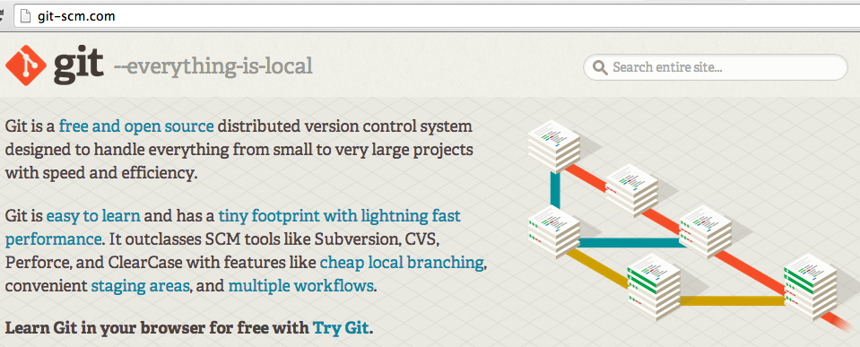
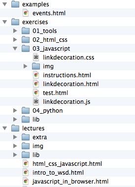
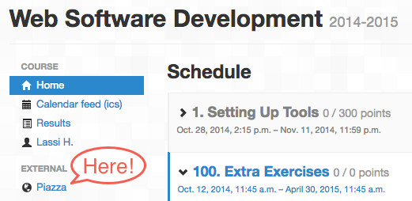

Petri Ihantola
(materials based on WSD lectures by Otto Seppälä, Lassi Haaranen, Petri Ihantola and Teemu Lehtinen from Aalto University)
"Student understands the distributed nature of a web application, session management and how the different parts of the application can communicate with each other. Student is able to design, implement, and deploy a small web application using a modern web application framework. Student knows how to test and debug a web application and has basic understanding of technologies and issues such as object relational mapping, security, efficiency, and scalability."
Skills
Knowledge
Responsible Teacher: Petri Ihantola
Teaching Assistants: Mikko Nurminen
User <--> Browser <--> Web Service <--> Database
This course roughly deals with the area marked with green.
Please sign up in POP.
Programming Experience with big enough personal project
Databases You need to understand databases, but programming framework will handle most of the stuff.
You are supposed to understand what you have done personally - and what not
The course consists of: lectures, exercises, exam, group project, and exam.
The lecture slides will available in the course repository, https://gitlab.rd.tut.fi/seitti/seitti2017.
To create files for printing to pdf append ?print-pdf to the url.
More information about the slides and how to print them reveal.js
Specific terms and commands within the text will be marked with <code> element. Code samples look like this:
//JavaScript sample
alert("Hello World!");Slides are also color-coded. This slide has the default background. Colors roughly correspond to
HTML CSS JavaScript Python & Django
Extra material looks like this. They usually contain links to useful material that go beyond the course content.
Seven rounds of exercises covering five general topics (i.e., Setting up, HTML/CSS, Javascript, Python, and Django):
At the very least you must pass one exercise round from each topic: Tools, HTML/CSS, JavaScript, Python, Django.
Passing all seven exercise rounds will give +1 towards the final course grade. Failing to complete a round from any of the topic will result in a failing grade from the course.
No mandatory attendance and no extra points from attending.
Covers exercises and lectures, i.e., project work is excluded
Sign up for the exams. Passing the exam is mandatory, exam is graded fail, pass, pass +1.
There will be an additional exam between Terms 3 and 4
During Term 4 there is a course project that is completed in groups of 3 people.
In the project you will create in teams a web service. The project topic and framework is set.
The project grading is as follows: fail, +1, +2, +3 to course grade. Note that this will contribute the most for your final grade, that is an indication where the largest workload is.
We'll talk more about this later.
Your final grade will be the sum of your grades as follows:
You need at least a passing grade from everything to pass the course.
Example:
| Area | Result | Effect on Grade |
|---|---|---|
| Exercises | Six rounds completed | +0 |
| Exam | Pass with +1 | +1 |
| Project | Completed with 2 | +2 |
| Course | 3 |
Exercises are done in TUT+ (A+).
The system is not open yet, will be opened next monday
Suitable editor is highly recommended on the course.
A review of good alternatives is available.
If you have no previous preferences, Atom.io is a good option, with many useful plugins available for (web) development. Note that there are binaries available for Atom for Windows/Linux, unlike the linked review states.
"Can you email me the current home page html-file...?"
$ cd public_html
$ ls
May 15 20:24 index_old.html
Jul 14 23:10 index_NEW_LOGO.html
Jul 14 22:44 index_html_v1_final.html
Sep 12 09:44 index_old_OLD.html
Oct 14 22:44 index_html_v1_final_FINAL.html
Nov 15 16:10 index_html_old_v1_FINAL_OCTOBER_DRAFT.html
This is web software development course... And any software development without version control is not worth calling software development.

Git can be downloaded from http://git-scm.com. There is also a freely available book on the site. Sections 2.2, 2.3, 2.4, and 2.5 cover most of what is needed on the course.
You will first fork (once) the official material repository. Then you will clone it to your local computer. You work on exercises and commit your work locally. Then you will push those commits to your GitLab repository (and at this point you can submit your work in TUT+ to be graded).
Exercise instructions for the first round can be found in A+ and in the course repository.
The rest of the rounds will have instructions only in the repository.
Instructions to get you started with the course workflow are in TUT+ in the exercises Exercise 01 - Getting Started With GitLab and Exercise 02 - Getting Started With Git.
wsd-agent as project member with at least Reporter accessFor more detailed instructions go to: https://plus.cs.tut.fi/
For more detailed instructions go to: https://plus.cs.tut.fi/
If your browser is relatively up to date this exercise can be completed without any additional browser extensions.
The idea is to get you acquainted with browser tools to inspect web pages.
It is a good idea to load the page with the browser tools open, so request and response content is stored.
If you do not have a recent browser, download one as soon as you can. The exercise has been tested with recent versions of Chrome, Firefox, IE10+, and Opera. And Safari works too, but you need to manually enable the developer tools first.

This material will update throughout the course. More information on how to get the latest material will be discussed in future lectures.

In addition to exercise group, you can ask questions and get help is through Piazza (link on the left sidebar). Notice that if you log into Piazza, your name and email address is transferred there. You can read Piazza's privacy policy here.
You can also get help in the exercise groups. Additionally there is an (unofficial) slack channel https://seitti.slack.com/signup.
Get started with exercises in TUT+
Ask questions about the course in Piazza
Attend lectures on Tuesdays and Thursdays at 12:30-14:00 in TB111